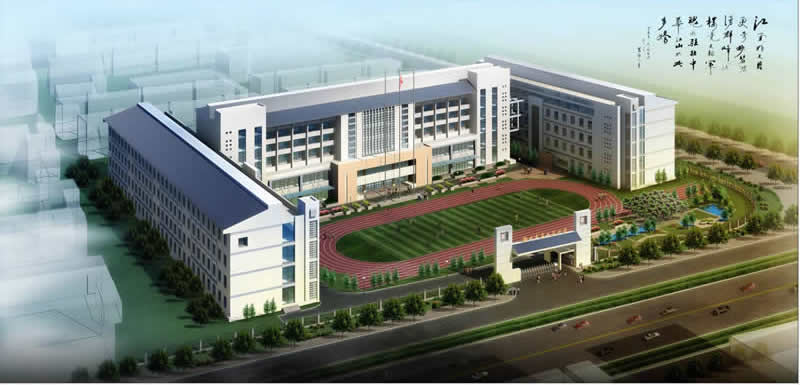

衡水市第十三中学——学校简介
作者：许志涛 来源：校内 发布时间：2012年03月29日15:22:15
学校基本情况
衡水市第十三中学是衡水市教育局直属三所重点高中（衡水中学、衡水二中、衡水十三中）之一，是一所国办高级中学。目前学校有在校生近4500人，59个教学班，教职工312人，其中特级教师2人，高级教师89人，所有教师都具备本科以上学历，30%研究生学历。
2010年学校由市政府投资完成了校园改扩建工程，建成了高标准教学楼、宿舍楼、科技实验楼和综合楼，铺设了塑胶操场，扩建了学生食堂和学生餐厅，学生就餐环境优美宽敞。宿舍、教室全部装配有暖气、空调，冬暖夏凉，条件舒适。教室配备有现代化投影仪、教学多媒体，教师人手一台液晶电脑，教学条件全市一流。
2012年2月9日，市教育局任命原衡水二中主管教学校长白祥友同志为衡水十三中新一任校长、书记，新一届领导班子成立，大刀阔斧锐意革新，全体师生激情澎湃斗志昂扬。学校奉行思想教育和严格管理并重的管理工作思路，浓化团结拼搏的工作学习氛围，努力培育惜时高效的思想意识，注重教工工作状态和学生学习状态提升，学校面貌和师生精神状态焕然一新，学校的高考成绩、办学声誉、教学管理等方面已走在衡水市前列。
2013年7月1日，中国最大、具有全球影响力的国家重点网站新华网对河北省2013年办学进步中学进行了重点盘点，在优秀中学中共遴选出4所进步突出优秀学校予以专题展示报道，我校以办学特色鲜明、办学理念先进、办学优势突出而脱颖而出，位列榜首。2014年5月我校成为温家宝母校中国地质大学优秀生源基地。
2014年11月22、23日，全国普通高中多样化发展与考试招生制度改革研讨会在山东聊城隆重召开，我校做为特色育人学校代表在大会现场做了典型发言。做为后起之秀，近年来，我校发扬“惟真惟实、唯先必争”的十三中精神，坚守“固本中求真，坚守中创新”的本真教育办学理念和“激爆潜能，滋育卓越，崛起奋进，勇创名校，办人民满意教育”的发展理念，逆境突围，强势崛起，在衡水大地开辟出教育新天地，闪耀独特教育魅力。
学校办学理念
秉承“奋进——为中华之崛起”的校训，学校领导班子团结和带领广大教职员工同舟共济，以强烈的事业心和高度责任感，发愤图强，艰苦创业，在传承和创新中稳步前进，综合办学水平不断提高。我校坚持本真教育办学理念，本真教育，是我校提出的教育应追溯本源，回归本真；教育管理者应还教育以本来面目，让学校固本求真，让师生各安其位，让教学在健康有序的前提下，焕发出蓬勃生机。教育必须尊重生命规律，激发生命潜能，成就生命价值。
我校坚持“解放生命，激爆潜能，超越每刻，卓越一生”的16字育人方针。解放生命，就是要打碎束缚成长的观念枷锁，充分相信孩子们的无限潜能；激爆潜能，就是要通过各种活动，老师带动，领导示范，释放出孩子们内心的强大力量；超越每刻，就是要惜时高效，珍视分秒，不断进取；卓越一生，就是要让每个孩子都能真正实现自己的人生价值，为自己的长远发展奠定坚实的基础。
“有学生的地方有老师，有老师的地方有校委会干部”。在这样的工作原则下，全校形成了学生看老师，老师看校委会干部的工作风气。校园风清气正，老师们爱生如子，敬业奉献。
办学发展情况
学校办学水平逐年提高，办学声誉不断提升。学校高考成绩一年一个新台阶，根据教育部门公布权威数据，我校本一、本二上线率在全市同类学校稳居第一名（不含音体美特长生），高考成绩在市区重点高中紧追二中，已经超越了衡水七所老牌重点中学。2014年高考再传捷报，我校838名学生报名参考，本科一批上线276人，本科二批上线510人，本科一批、二批上线人数、上线率以绝对优势位列同类学校全市第一名。目前高三全体师生正在凝神聚力，厉兵秣马冲刺2015年高考！
近年来，随着我校逆境突围、强势崛起，吸引来全国各省市大批教育参观团，学校年接待访问人次不断刷新。目前，已有全国21省份教育同仁6万多人次参观来访，十三中独具特色的“本真教育、激情教育理念”为参观来宾留下了深刻印象。在参观活动中，我校安排有校园文化参观、现场观摩课以及办学情况报告会等丰富多彩的内容。我校精细化的校园环境，人文化的管理细节，浓厚的教育教学氛围受到参观来宾的广泛称赞。《中国教育报》、《中学名校长》、《燕赵都市报》、《燕赵晚报》、《衡水日报》、《衡水晚报》、中国网、新华网、河北新闻网、长城网等100多家新闻媒体均对我校特色发展理念、突出办学效果给予跟踪报道。
上一篇：衡水第十三中学--特色教育 下一篇：衡水第十三中学--校长信箱其他栏目
热烈庆祝我校2016年高考大捷
中共衡水市委发来贺信
我校高考600分以上光荣榜
衡水十三中2016年招生热
衡水市十三学校园开放日
评价
用户：小星星
我家孩子就是在这上的学，老师教的好，环境美，谢谢老师谢谢学校。
用户：哈哈
不知道这好不好啊，有人给个建议不。
用户：nihao
衡水教育太严格，对孩子的成长不好。